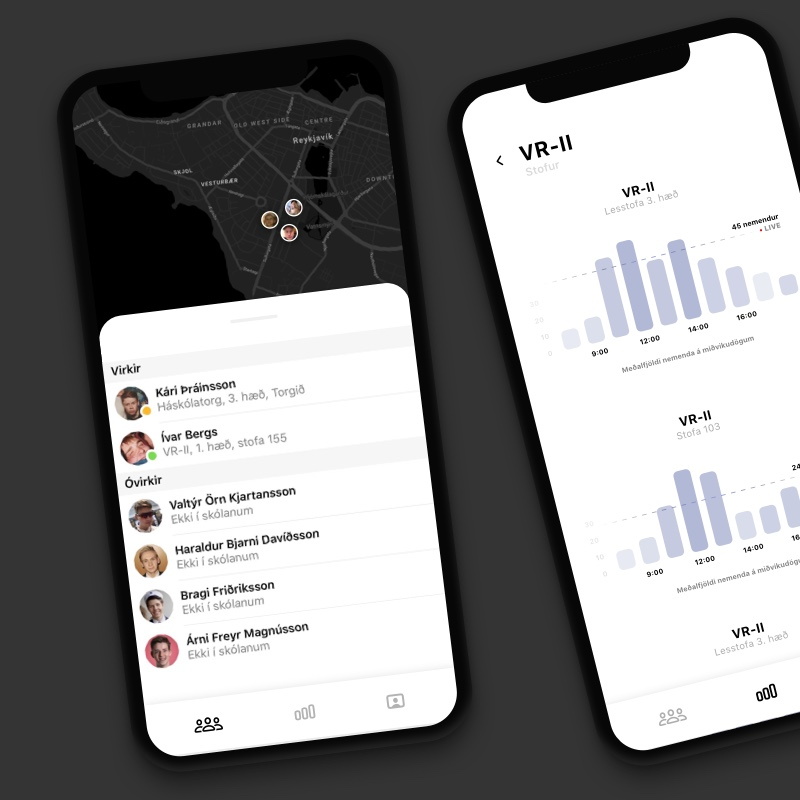
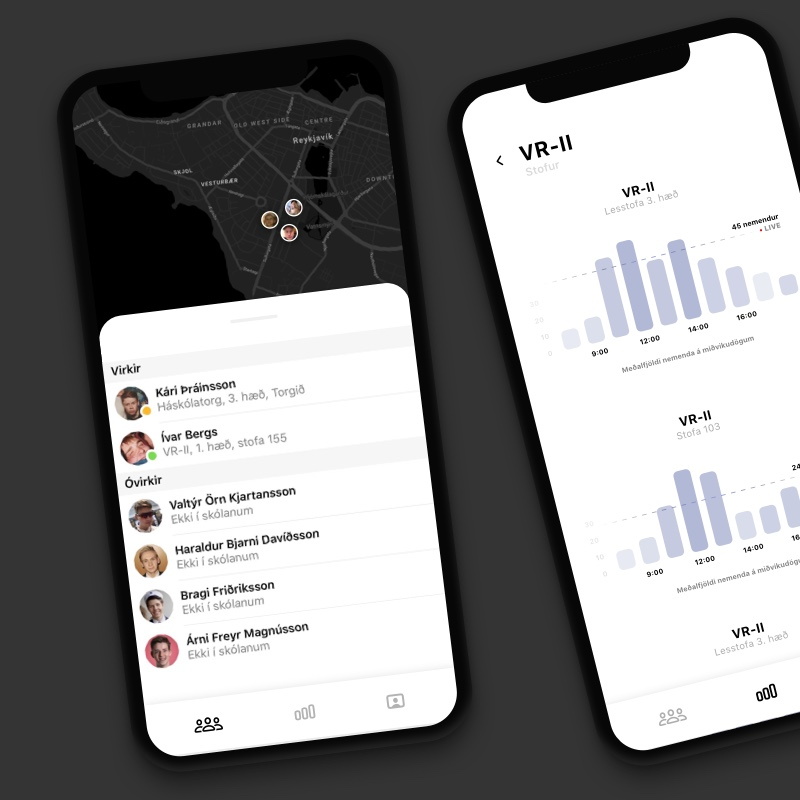

Ég heiti Valtýr Örn
Ég er forritari, viðmótshönnuður og nemandi.
Ég útskrifaðist úr Menntaskólanum í Reykjavík árið 2017 þar sem ég sinnti formennsku elsta nemendafélags íslands en er nú að ljúka við BS nám í Hugbúnaðarverkfræði við Háskóla Íslands.
Meðfram skóla hef ég unnið sem front-end forritari hjá ýmsum fyrirtækjum. Þar á meðal má nefna influencer marketing sprotann Takumi og SaaS fyrirtækið Avo sem fór í gegn um Y-Combinator hraðalinn.
Árið 2018 setti ég af stað Anorak, samfélagsmiðil fyrir nemendur og nemendafélög í framhaldsskólum á Íslandi. Anorak var um nokkurt skeið mest sótta smáforritið á íslenska App Store og sá mikla notkun í skólum á borð við MR, Verzló og Kvennó.


 
